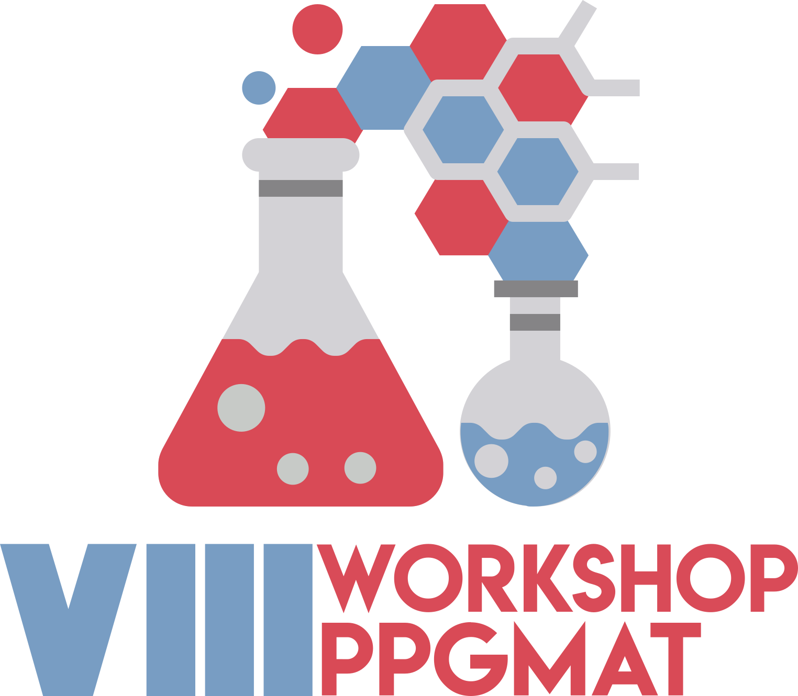

Momento da entrega de credenciais e chamada para o evento
Com o Pr. Dr Josmary R. Silva
Com Arturo Bismarck Linares Veliz
Com Thalita Hellen de Castro Lima
-
Com Milton Vizini Correa Neto
Com Kevin Figueiredo dos Santos
Com Wallas Alves Pires dos Santos
Com Isabelle Caroline A. da Silva Aguiar
Com Bruna de Sousa Ribeiro
Com Marcos da Silva Sousa
-
Com Raul Tadeu Lobato Ferreia
Com Carolina Lilibeth Carvalho de Pinho
Com Jair Marques Junior
Com Rafael Brito Menezes